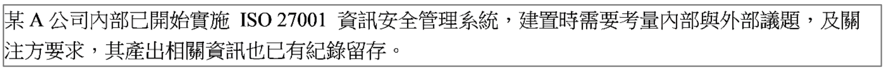
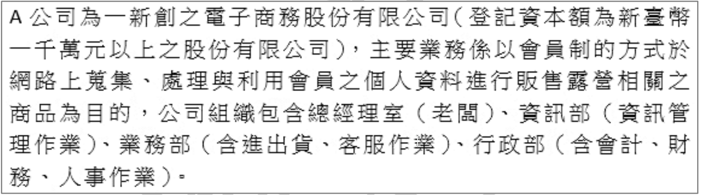
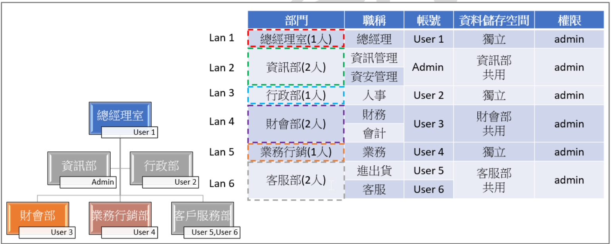
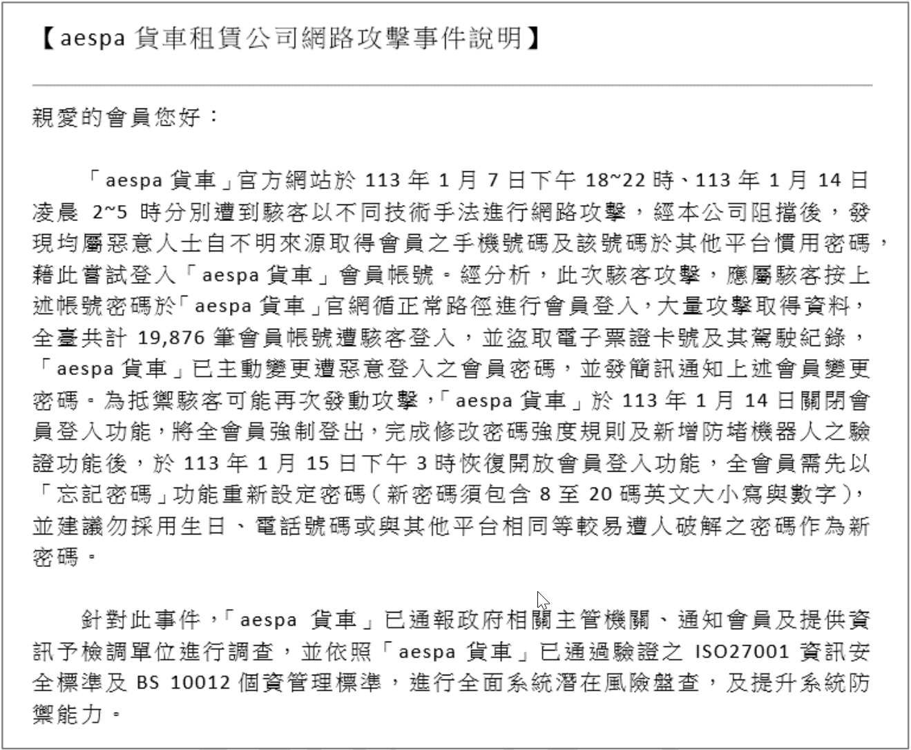
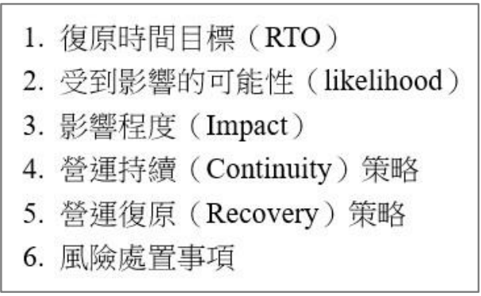
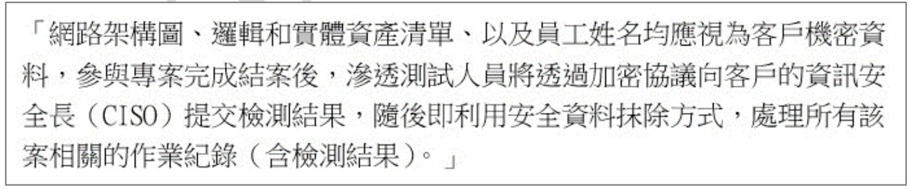
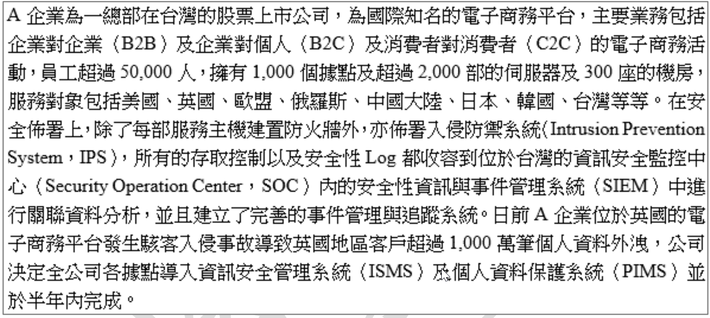
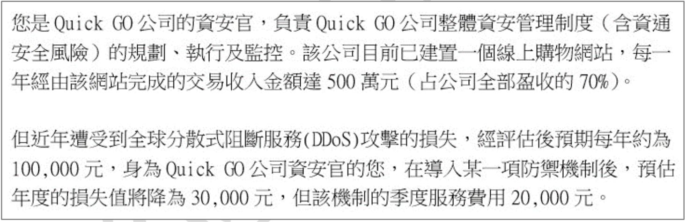

服務組織控制報告 (Service Organization Controls, SOC Report) 為美國會計師協會 (AICPA) 所訂定之報告形式, 有 SOC1、SOC2 與 SOC3 等三種, 其目的是透過獨立會計師審查以說明組織所提供服務之安全控管現況、程度及有效性。請問下列何種報告最適合發布給一般大眾閱讀的?
SOC 報告系列的目的和分發對象不同：
- SOC1 (對財務報告相關的內部控制進行審查): 主要提供給服務組織的客戶及其查核會計師，用於評估服務組織的控制對客戶財務報表的影響。非公開。
- SOC2 (對基於信任服務準則—安全、可用、處理完整、機密、隱私—的控制進行審查): 提供給需要詳細了解服務組織控制措施的利害關係人（如客戶、合作夥伴、監管機構），通常需要保密協議 (NDA)。非公開。
- SOC3 (基於 SOC2 的簡要報告): 提供一個總結性的保證，確認服務組織達到了信任服務準則的要求，但不包含詳細的測試程序和結果。由於內容較為簡略且不含敏感細節，適合公開發布，常用於行銷或向一般大眾展示其安全承諾。
因此，最適合發布給一般大眾閱讀的是 (C) SOC3。
智慧型物聯網 (IoT) 設備於進入歐盟市場之時, 應該要遵循下列何項歐盟新發布的法案, 以完成應遵循的安全責任及義務事項, 以避免高額的罰鍰(如 1,500 萬歐元)?
A
NIS2 Directive (歐盟第 2022/2555 號《於歐盟實施高度共通程度之資安措施指令》)
B
Cybersecurity Resilience Act (《資通安全韌性法案》)
C
NIS Directive (《網路與資訊系統安全指令》)
D
Cybersecurity Act, Regulation 2019/881 (《資通訊安全法案》)
歐盟近年來針對資通安全頒布了多項法規：
(A) NIS2 Directive: 主要針對關鍵基礎設施和數位服務提供者提出更嚴格的資安和通報要求，取代了舊的 NIS Directive。
(B) Cybersecurity Resilience Act (CRA): 這是一項較新的提案（在題目考試日期時可能仍在立法程序中，但概念已提出），專門針對含有數位元件的產品（包括IoT設備）的網路安全要求，旨在從產品設計、開發到整個生命週期都納入安全考量，要求製造商承擔更多安全責任。其目標是提升歐盟市場上連網產品的整體安全水平，並且包含高額罰款條款。這是最直接針對IoT設備進入歐盟市場的資安法規。
(C) NIS Directive: 網路與資訊系統安全指令的第一版，已被 NIS2 取代並擴大範圍。
(D) Cybersecurity Act: 主要建立了歐盟網路安全局 (ENISA) 的永久授權，並引入了歐盟範圍的網路安全認證框架，較少直接規範IoT設備製造商的義務。
*註：題目提到“新發布”，CRA 是相對較新的法案，且直接鎖定IoT等連網產品。*
因此，最符合題意的答案是 (B)。
公司建置資訊安全管理系統時, 下列何者並「不」是主要考慮的因素?
建置資訊安全管理系統 (ISMS)，如 ISO 27001，需要考量多方面的要求與利害關係者的需求：
(A) 遵守適用的法律和法規（如個資法、資安法、行業規範等）是建置 ISMS 的基本要求。
(C) 滿足客戶和合約中對資訊安全的要求，是維持業務關係和履行合約義務的必要條件。
(D) 如果公司屬於特定行業（如金融、電信、醫療）或特定規模（如上市公司），可能需要遵守主管機關提出的特定資安要求。
(B) 資訊安全主管的角色是規劃、推動和維護 ISMS，其專業能力固然重要，但 ISMS 的建置應基於組織的風險評估結果、業務需求、法規與合約要求等客觀因素，而非主管個人的專長。主管的專長可能會影響執行方式，但不應是決定 "是否" 或 "為何" 建置 ISMS 或決定其範圍的主要考慮因素。
因此，(B) 不是建置 ISMS 主要考慮的因素。
某公司建置的測試區域遭受駭客入侵, 導致重要客戶資料外流。以下哪些選項可作為前述資安問題的改善措施? (複選)
測試環境遭入侵導致生產環境（或真實客戶）資料外洩，通常涉及幾個問題：測試環境安全不足、測試環境與生產環境隔離不足、在測試環境中使用了真實敏感資料。
改善措施應針對這些問題：
(A) 避免在安全性較低的測試環境中使用真實、敏感的客戶資料，應使用去識別化或模擬資料。這是重要的資料最小化和風險降低措施。
(B) 測試環境也需要適當的安全防護，包括防火牆管理，以防止其成為入侵的跳板。
(C) 這個選項描述的是導致問題發生的原因之一（在測試系統輸入真實資料），而不是改善措施。
(D) 對測試環境和生產環境進行嚴格的網路隔離和存取控制，確保測試環境的事件不會影響到生產環境，是基本的安全架構原則。
因此，有效的改善措施包括 (A)、(B) 和 (D)。 *根據使用者OCR標示，答案為A/B/D或A/D，選A/B/D*。
【題組1】情境如附圖所示, 關於建置組織內
資訊安全管理系統需參考的
關注方要求, 下列敘述何者
錯誤?
某A公司內部已開始實施 ISO 27001 資訊安全管理系統, 建置時需要考量內部與外部議題, 及關注方要求, 其產出相關資訊也已有紀錄留存。

A
建置組織內資訊安全管理系統時, 關注方亦包含相關適用法規要求
B
個人資料保護法屬於電腦處理相關行業才須遵守的法規
D
組織有合約規範的供應商, 也為組織內建置資訊安全管理系統的關注方
建置 ISMS (ISO 27001) 時，需要識別利害關係者（關注方）及其相關要求。
(A) 法律法規的要求是組織必須遵守的，屬於重要的外部關注方要求。
(B) 個人資料保護法適用於所有蒐集、處理或利用個人資料的公務及非公務機關（除非有特定排除條款），並非僅限於電腦處理相關行業。此敘述錯誤。
(C) 主管機關（如行業監管機構、資安主管機關）可能對組織的資安有特定要求，是重要的關注方。
(D) 供應商（特別是有合約規範的）的資訊安全狀況可能影響組織自身，其安全要求（或組織對其的要求）也需要考慮，屬於關注方。
因此，錯誤的敘述是 (B)。
【題組1】情境如附圖所示, 關於
資通安全責任等級分級辦法, 下列敘述何者
正確?
某A公司內部已開始實施 ISO 27001 資訊安全管理系統, 建置時需要考量內部與外部議題, 及關注方要求, 其產出相關資訊也已有紀錄留存。
A
資通安全管理法規範公務機關及特定非公務機關之資通安全責任等級, 分為 A 至 D 級
C
公務機關其負責業務有涉及國家機密, 其資通安全責任等級即為 A 級
D
各公務機關未維運自行或委外開發之資通系統者, 其資通安全責任等級為 C 級
根據我國《資通安全責任等級分級辦法》：
(A) 資通安全責任等級分為 A、B、C、D、E 五級（第4條）。選項說 A 至 D 級，不完整。
(B) 公務機關應每年重新檢視其資通安全責任等級之適當性（第6條）。選項說每三年，錯誤。
(C) 責任等級 A 之公務機關條件之一為「業務涉及國家機密」（第4條附件一）。此敘述正確。
(D) 機關是否自行或委外開發維運資通系統，是分級的考量因素之一，但並非直接決定等級為 C 級。等級的判定需要綜合考量業務重要性、資料敏感性、系統規模等多重因素。
因此，正確的敘述是 (C)。
【題組1】情境如附圖所示, 關於組織建置
資訊安全管理系統的
法規遵循性敘述, 下列何者
錯誤?
某A公司內部已開始實施 ISO 27001 資訊安全管理系統, 建置時需要考量內部與外部議題, 及關注方要求, 其產出相關資訊也已有紀錄留存。
A
組織識別適用所在地之法規為主, 不予以考量營業據點所在其他國家相關的法規事項
C
客戶提供之紀錄, 亦須予以授權保護, 以免違反與客戶合約要求
D
個人隱私資訊的法規, 需將資料會傳遞的國家法規皆予以納入
法規遵循是 ISMS 的重要環節。
(A) 對於跨國營運的組織，不僅要遵守總部所在地的法規，還必須遵守其所有營業據點所在地以及所服務客戶所在地的相關法規（例如 GDPR 對處理歐盟居民資料的規範）。宣稱不考量其他國家法規是錯誤的。
(B) 智慧財產權（如著作權、專利、商標）相關法規是普遍適用的，組織在使用軟體、資料、內容時都應遵守。
(C) 保護客戶提供的紀錄或資料，是履行合約義務和維持信任的基礎，應納入 ISMS 管控。
(D) 個人隱私資訊的處理尤其需要注意跨境傳輸的法規遵循問題，必須同時考量資料來源國和目的地國的相關法規。
因此，錯誤的敘述是 (A)。
【題組1】情境如附圖所示, 下列哪些是組織建置
資訊安全管理系統決定
實施範圍需要考量的項目? (
複選)
某A公司內部已開始實施 ISO 27001 資訊安全管理系統, 建置時需要考量內部與外部議題, 及關注方要求, 其產出相關資訊也已有紀錄留存。
A
會影響組織實施資訊安全管理系統時的內部與外部議題
C
與組織實施資訊安全管理系統, 範圍內有委外給供應商的活動, 可以不予納入
D
與客戶合約要求的系統範圍, 應納入資訊安全管理系統範圍考量
根據 ISO 27001 標準（4.3 決定資訊安全管理系統之範圍），組織在決定 ISMS 範圍時應考量：
a) 內部與外部議題 (參考 4.1)。
b) 利害關係者（關注方）的要求事項 (參考 4.2)。
c) 組織所執行活動與其他組織所執行活動間的介面及相依性。
(A) 對應標準 a)。
(B) 對應標準 b)。
(C) 如果委外活動是在組織定義的 ISMS 範圍內，則必須將對供應商的管理納入 ISMS，不能不予納入。此敘述錯誤。
(D) 客戶合約的要求是重要的關注方要求，其涉及的系統範圍自然應納入 ISMS 範圍考量。
因此，需要考量的項目是 (A)、(B)、(D)。*根據使用者OCR標示，答案為A/B/D*。
一個要導入 ISO 27001 的組織, 為了降低組織資產未經授權或誤用的機會, 下列何種措施較「無法」避免?
降低資產未經授權或誤用機會的措施：
(A) 職務區隔 (Segregation of Duties): 避免單一人擁有過多權限，可以防止未經授權的操作或舞弊。
(B) 職務輪調 (Job Rotation): 定期輪換人員職務，可以增加舞弊被發現的機會，並減少單一人長期把持敏感職位的風險。
(D) 存取控制政策 (Access Control Policy): 明確規定誰可以存取什麼資源，以及如何存取，是防止未經授權存取的基礎。
(C) 資產清冊 (Asset Inventory): 主要目的是識別和記錄組織擁有的資產及其價值、位置、擁有者等信息，是風險評鑑和資產管理的基礎。它本身並不能直接「避免」資產被未經授權使用或誤用，而是為了更好地管理和保護這些資產提供依據。相比其他選項，它預防未授權/誤用的效果最不直接。
因此，較「無法」避免未經授權或誤用的措施是 (C)。
關於政府零信任 (Zero Trust) 網路之敘述, 下列何項正確?
A
政府推動零信任網路是由國家通訊傳播委員會 (NCC) 推動主導
B
政府零信任網路包含身分鑑別、設備鑑別及信任推斷等 3 大核心機制
關於我國政府推動的零信任架構：
(A) 政府的資通安全政策主要由數位發展部資通安全署 (ACSD) 主導推動，而非 NCC。
(B) 根據資安署公布的「政府零信任架構導入規劃」，其核心機制確實包含「身分鑑別」、「設備鑑別」和「信任推斷」三大核心機制。正確。
(C) FIDO2 是實現強力身分鑑別的一種技術，滿足「身分鑑別」的要求，但零信任是一個整體架構，還需要滿足「設備鑑別」和「信任推斷」的要求，僅FIDO2 並不足以滿足整個零信任網路的要求。
(D) 掌握設備健康狀態是「信任推斷」的重要輸入因子之一，但「設備鑑別」本身更側重於確認設備的身分和合規性（例如：是否為註冊設備、是否符合安全基線），不僅僅是健康狀態。
因此，正確的敘述是 (B)。
關於「資料」存取的控制方法, 「不」包括下列何者?
A
強制存取控制 (Mandatory Access Control, MAC)
B
存取控制清單 (Access Control List, ACL)
C
隨機存取控制 (Randomly Access Control, RAC)
D
角色基準存取控制 (Role-based Access Control, RBAC)
常見的存取控制模型/方法包括：
(A) 強制存取控制 (MAC): 基於主體（使用者）和客體（資源）的安全標籤（如機密等級）進行存取決策，由系統強制執行，使用者無法自行改變權限。
(B) 存取控制清單 (ACL): 附加在客體（資源）上，列出哪些主體可以對其執行哪些操作。這是自主存取控制 (DAC) 的一種實現方式。
(D) 角色基準存取控制 (RBAC): 基於使用者被賦予的角色來決定其存取權限，簡化了權限管理。
(C) 「隨機存取控制 (Randomly Access Control, RAC)」並非資訊安全領域公認的標準存取控制模型。存取控制應該是明確且基於規則的，而不是隨機的。
因此，(C) 不是一種標準的資料存取控制方法。
關於「身分驗證管理」相關控制措施的敘述, 下列哪些正確? (複選)
B
應具備帳戶鎖定機制, 例如: 帳號登入進行身分驗證失敗達五次後, 至少十五分鐘內不允許該帳號繼續嘗試登入
(A) 使用預設密碼登入後，必須立即強制使用者變更密碼，以避免預設密碼被輕易猜測或利用。宣稱無需立即變更是錯誤的安全實務。
(B) 帳戶鎖定機制是防禦密碼暴力破解的基本措施。設定合理的失敗次數（如5次）和鎖定時間（如15分鐘或更長）是常見做法。正確。
(C) 臨時或緊急帳號應有明確的有效期，到期後必須立即刪除或禁用，以防止被濫用。正確。
(D) 要求密碼符合最低複雜度要求（如包含大小寫字母、數字、特殊符號）可以增加密碼被猜測或破解的難度。正確。
因此，正確的敘述是 (B)、(C)、(D)。 *此題選項A明顯錯誤，但用戶OCR標示答案為 B，這與複選題型矛盾，且與標準安全實務不符。假設題目是問何者錯誤，則A正確。若題目問何者正確，則B, C, D 正確。因OCR標示為B，且無複選標記，可能存在誤標或題目問題。依據標準安全實務判斷B, C, D為正確。*
【題組2】情境如附圖所示, 為了避免該公司所保有的會員個人資料遭受內部未經授權的存取, 因此公司
資安長 (
老闆) 要求資訊部評估採取適切的控制措施, 以降低
個人資料外洩風險的發生, 試問資訊部對於會員
個人資料遭受內部未經授權存取的風險所採取之控制措施, 下列敘述何者
錯誤?
A公司為一新創之電子商務股份有限公司(登記資本額為新臺幣一千萬元以上之股份有限公司), 主要業務係以會員制的方式於網路上蒐集、處理與利用會員之個人資料進行販售露營相關之商品為目的, 公司組織包含總經理室(老闆)、資訊部(資訊管理作業)、業務部(含進出貨、客服作業)、行政部(含會計、財務、人事作業)。

A
採用圖靈驗證碼 (Captcha) 控制措施, 以識別該身分於存取系統或資源時的權限
B
採取權限管理之控制措施, 以確保每個使用者僅能存取其需要的資源與功能防止越權存取
C
採取存取紀錄監控與審查, 以確保及時發現異常之系統存取活動
D
採取桌面淨空政策, 以避免遭受未經授權存取之風險
防止內部未經授權存取個人資料的控制措施：
(A) Captcha 主要用於區分人類使用者和自動化程式（機器人），通常用於公開的註冊或登入頁面，以防止自動化攻擊。它不能用於識別已登入使用者在存取內部系統資源時的權限。此敘述錯誤。
(B) 權限管理（基於最小權限原則和職務需求）是控制內部存取的核心措施，確保使用者只能存取其執行職務所需的資料。
(C) 監控和審查存取紀錄（稽核軌跡）可以偵測到未經授權的存取嘗試或異常活動。
(D) 桌面淨空政策 (Clean Desk Policy) 要求員工離開座位時收好實體文件或鎖定螢幕，可以防止他人窺視或物理性地取得敏感資訊（包括可能寫在紙上的個資或登入憑證）。
因此，(A) 的描述是錯誤的控制措施應用。
【題組2】情境如附圖所示, 為了強化該公司對於會員
個人資料保護的作為,
資安長 (
老闆) 要求資訊部重新評估公司整體
資訊安全相關作為, 以降低整體營運上之風險, 試問資訊部對於整體
資訊安全強化所採取之作為, 下列敘述何者
錯誤?
A公司為一新創之電子商務股份有限公司(登記資本額為新臺幣一千萬元以上之股份有限公司), 主要業務係以會員制的方式於網路上蒐集、處理與利用會員之個人資料進行販售露營相關之商品為目的, 公司組織包含總經理室(老闆)、資訊部(資訊管理作業)、業務部(含進出貨、客服作業)、行政部(含會計、財務、人事作業)。
A
採取邊界防禦評估, 包含防火牆、入侵偵測/防禦系統 (IDS/IPS) 與網路安全設備等, 以防止未經授權之存取
C
採取應用程式保護評估, 包含弱點掃描、滲透測試以及源碼檢測等
D
採取資料保護評估, 包含機密等級識別、資料加密傳輸、存取控制等
評估整體資訊安全的作為：
(A) 邊界防禦評估是網路安全的重要環節，評估防火牆、IDS/IPS 等設備的有效性。
(B) 防毒軟體主要功能是偵測和清除惡意程式，它不負責身分驗證（檢查使用者是誰）或授權管理（決定使用者能做什麼）。身分驗證和授權需要專門的機制（如密碼、MFA、AD、IAM 系統）。此敘述錯誤。
(C) 應用程式保護評估涉及多種測試方法（SAST, DAST, 滲透測試）以發現和修補應用程式本身的安全漏洞。
(D) 資料保護評估關注資料在儲存、傳輸、使用過程中的機密性、完整性和可用性，涉及資料分類分級、加密、存取控制、備份等措施。
因此，錯誤的敘述是 (B)。
【題組2】情境如附圖所示, 依據 A 公司現行事業之經營模式, 試問若要滿足
個人資料保護相關之法規範要求, 下列敘述何者
錯誤?
A公司為一新創之電子商務股份有限公司(登記資本額為新臺幣一千萬元以上之股份有限公司), 主要業務係以會員制的方式於網路上蒐集、處理與利用會員之個人資料進行販售露營相關之商品為目的, 公司組織包含總經理室(老闆)、資訊部(資訊管理作業)、業務部(含進出貨、客服作業)、行政部(含會計、財務、人事作業)。
A
依據 A 公司個人資料蒐集、處理與利用之目的, 對於會員個人資料蒐集之特定目的項目與類別可包含○四○行銷(包含金控共同行銷業務)、C○○一識別個人者、C一一一健康紀錄等
B
在實施個人資料之蒐集前應向潛在客戶告知包含一、A 公司名稱；二、蒐集之目的；三、個人資料之類別；四、個人資料利用之期間、地區、對象及方式；五、當事人依第三條規定得行使之權利及方式；六、當事人得自由選擇提供個人資料時, 不提供將對其權益之影響
C
應採行適當之安全措施, 防止個人資料被竊取、竄改、毀損、滅失或洩漏, 包含採取技術上及組織上之措施
D
依據網際網路零售業及網際網路零售服務平台業個人資料檔案安全維護計畫及業務終止後個人資料處理作業辦法制定個人資料檔案安全維護計畫及業務終止後個人資料處理方法之訂定、修正及執行
依據我國個人資料保護法 (PDPA) 及其相關規定：
(A) 特定目的項目「○四○ 行銷」和類別「C○○一 識別個人者」符合電子商務目的。但「C一一一 健康紀錄」屬於特種個資（敏感性資料），除非符合 PDPA 第6條的特定情形（例如法律明文規定、公務執行、當事人書面同意等），否則不得蒐集、處理或利用。販售露營商品通常不符合蒐集健康紀錄的合法要件。此敘述錯誤。
(B) 列出的六項內容符合 PDPA 第8條關於蒐集前應告知事項的要求。
(C) 符合 PDPA 第27條要求非公務機關應採行適當安全措施保護個資。
(D) A 公司屬於電子商務業者（網際網路零售業），應依據主管機關（經濟部）訂定的「網際網路零售業及網際網路零售服務平台業個人資料檔案安全維護計畫及業務終止後個人資料處理作業辦法」制定內部計畫。此敘述正確。
因此，錯誤的敘述是 (A)。
【題組2】情境如附圖所示, 為了因應日益成長的網路業務, A 公司決定擴大規模, 將原本會計與財務作業由行政部獨立出來, 進出貨與客服作業由業務部獨立出來, 資訊部由原本資訊管理作業增加資安業務, 因此 A 公司的新組織架構如附圖所示。試問依據新的組織架構, 下列哪些規劃措施較「不」符合資安管理要求? (複選)
(附圖顯示新架構：總經理室(User1,admin)、資訊部(Admin,admin)、行政部(User2,admin)、財會部(User3,admin)、業務行銷(User4,admin)、客服部(User5,User6,admin)。資訊部管理員帳號為Admin，財會部帳號為User3，客服部帳號為User5, User6。)

分析新組織架構下的規劃措施：
(A) 依部門屬性（如財會、資訊、業務）進行網路分段隔離，是良好的安全架構設計，可以限制橫向移動範圍。
(B) 附圖權限欄顯示所有部門人員帳號都具有 admin 權限。這嚴重違反了最小權限原則，是非常不安全的做法。
(C) 資訊部人員（可能多人）共用同一個高權限 Admin 帳號，無法落實職責區分和追究責任 (Accountability)，是不良的帳號管理實務。
(D) 財會部人員（可能多人）共用同一個 User 3 帳號，同樣違反了一人一帳號的原則，難以追究責任。
因此，不符合資安管理要求的措施是 (B)、(C)、(D)。*根據使用者OCR標示，答案為B/C/D*。
關於端點偵測及回應 (Endpoint Detection and Response, EDR) 的作用敘述, 下列何者較「不」正確?
EDR 解決方案旨在提供更進階的端點威脅偵測、調查和回應能力：
(A) EDR 會持續監控和記錄端點上的詳細活動（如行程建立、檔案存取、網路連線、登錄檔修改等）。
(B) EDR 利用行為分析、機器學習、威脅情資等技術來分析記錄的事件，以偵測傳統防毒軟體可能遺漏的可疑活動或進階威脅。
(C) EDR 提供調查工具（如根本原因分析）和回應能力（如隔離端點、終止行程、刪除檔案），協助安全分析師或應變團隊快速有效地回應事件。
(D) 沒有任何單一安全工具能夠「完全防止」所有安全事件。EDR 主要強化偵測和回應能力，雖然也能提供一定的預防功能，但其核心價值在於處理更複雜、更隱匿的威脅，而非保證百分之百的預防。宣稱能完全防止是不正確的。
因此，(D) 的敘述最不正確。
規劃網路安全架構時, 下列何項措施能「較有效」的保護資料的機密性?
機密性 (Confidentiality) 指的是防止未經授權的資訊揭露。
(A) 資料傳輸加密（如使用 TLS, IPSec）直接保護資料在網路傳輸過程中不被竊聽，是保護機密性的核心技術。
(B) 防火牆主要進行網路存取控制，防止未經授權的連接，間接有助於保護機密性，但其主要目的不是加密內容。
(C) 資料備份主要保障資料的可用性 (Availability) 和完整性 (Integrity)，與機密性的直接關聯較小（除非備份本身也加密）。
(D) 網路隔離（分段）可以限制未授權的存取範圍，也是一種存取控制手段，有助於機密性，但不如加密直接。
因此，(A) 資料傳輸加密是四個選項中對於保護資料機密性「最直接」且「較有效」的措施。
「資通威脅情資」(Cyber Threat Intelligence, CTI) 是指蒐集、分析和處理有關網宇威脅行為和漏洞的資訊, 以幫助組織瞭解資安威脅的狀況, 主動做好威脅應對和預防措施, 以保護組織的營運, 並降低事件所造成的衝擊影響。若以提供高階主管的 CTI 類型應選擇下列何項較為合適?
CTI 通常分為幾個層次，面向不同的受眾和決策需求：
(A) 戰略型情資 (Strategic CTI): 提供高層次的威脅態勢分析、長期趨勢、地緣政治影響、以及對組織業務風險的評估。這類情資主要提供給高階主管和決策者，用於制定組織安全策略和資源分配。
(B) 戰術型情資 (Tactical CTI): 描述攻擊者的戰術、技術和程序 (TTPs)，幫助安全團隊了解攻擊者的行為模式，以改進防禦措施。
(C) 技術型情資 (Technical CTI): 包含具體的入侵指標 (IoCs)，如惡意 IP 位址、檔案雜湊值、惡意網域名稱等，主要用於安全設備（如防火牆、IDS）的規則配置和即時偵測。
(D) 操作型情資 (Operational CTI): 提供關於特定攻擊活動或威脅行動的詳細資訊，幫助安全運營團隊 (SOC) 或事件應變團隊 (IR) 進行威脅獵捕和事件應對。
因此，最適合提供給高階主管的是 (A) 戰略型情資。
規劃系統安全架構時可採取之控制措施, 下列敘述哪些「有誤」? (複選)
評估選項中的控制措施是否恰當：
(A) 使用單一（共享）帳號和密碼是非常不安全的做法，違反了可究責性 (Accountability) 原則。應使用個人唯一帳號。此敘述錯誤。
(B) 防火牆規則應定期檢視和審核，以確保其仍然符合當前的安全政策和網路環境，並移除不再需要或不安全的規則。宣稱無須定期檢視是錯誤的。
(C) 定期進行漏洞掃描並及時修補發現的漏洞，是維持系統安全的基本且必要的措施。
(D) 應遵循最小權限和最小服務原則，關閉所有不必要的服務和連接埠，以減少攻擊面。開放不必要的端口是錯誤的。
因此，錯誤的敘述是 (A)、(B)、(D)。*根據使用者OCR標示，答案為A/B/D*。
【題組3】情境如附圖所示, 該公司主要是遭受下列何種攻擊?
【aespa 貨車租賃公司網路攻擊事件說明】
親愛的會員您好:
「aespa 貨車」官方網站於113年1月7日下午18~22時、113年1月14日凌晨 2~5 時分別遭到駭客以不同技術手法進行網路攻擊, 經本公司阻擋後, 發現均屬惡意人士自不明來源取得會員之手機號碼及該號碼於其他平台慣用密碼, 藉此嘗試登入「aespa 貨車」會員帳號。經分析, 此次駭客攻擊, 應屬駭客按上述帳號密碼於「aespa 貨車」官網循正常路徑進行會員登入, 大量攻擊取得資料, 全臺共計 19,876 筆會員帳號遭駭客登入, 並盜取電子票證卡號及其駕駛紀錄...後續措施包含強制重設密碼、增強密碼規則、新增防堵機器人驗證...

B
中間人攻擊 (Man-in-the-middle attack)
C
憑證填充 (Credential Stuffing) 攻擊
D
表頭攻擊 (host header attack)
根據事件說明，攻擊的關鍵特徵是：駭客使用從「其他平台」外洩的帳號密碼（手機號碼+慣用密碼），來嘗試登入「aespa 貨車」的會員帳號，並且大量成功登入。
這種利用已洩漏的憑證（用戶名/密碼組合）自動化地嘗試登入其他不同服務的攻擊手法，正是憑證填充 (Credential Stuffing) 攻擊的典型特徵。
(A) DDoS 目的是癱瘓服務，而非登入帳號竊取資料。
(B) 中間人攻擊是攔截通訊。
(D) 表頭攻擊是利用 HTTP Host 標頭進行的攻擊，與此情境不符。
因此，最符合的攻擊類型是 (C)。
【題組3】情境如附圖所示。承上題, 關於該項攻擊敘述, 下列何項
錯誤?
【aespa 貨車租賃公司網路攻擊事件說明】(同上題)
承上題，該攻擊是憑證填充 (Credential Stuffing)。
(A) 憑證填充的主要目的是成功登入帳號，以竊取資料、濫用帳戶或進行詐欺，而非癱瘓網路服務（那是 DDoS 的目的）。此敘述錯誤。
(B) 憑證填充通常使用自動化工具（機器人）大規模地嘗試登入。
(C) 攻擊者使用的憑證來源是其他服務的外洩資料。
(D) 憑證填充之所以有效，正是利用了使用者在不同網站/服務重複使用相同或相似帳號密碼的不良習慣。
因此，錯誤的敘述是 (A)。
【題組3】情境如附圖所示。承上題, 該公司最「
不」可能會有下列何項
法律問題?
【aespa 貨車租賃公司網路攻擊事件說明】(同上題, 事件導致19,876筆會員個資外洩)
A公司發生個資外洩事件，可能涉及的法律問題：
(A) 資通安全管理法：若A公司被認定為特定非公務機關（例如，依其資本額或業務性質），則需遵守資安法的要求，包括採取安全維護措施和事件通報義務。個資外洩可能違反這些義務。
(B) 個人資料保護法 (PDPA): 這是最直接相關的法律。A公司蒐集、處理、利用個資，發生外洩事件表示其未能採取適當安全措施保護個資，違反 PDPA 第27條，需負損害賠償責任，並可能有行政罰鍰，且需依第12條通知當事人。
(D) 上市上櫃公司資通安全管控指引：若A公司為上市櫃公司（題目未明確說明，但從事件處理方式看有可能），則需遵守此指引，發生重大資安事件（如大量個資外洩）需依規定通報主管機關並可能需發布重大訊息。
(C) 公司法：主要規範公司的設立、組織、運作、解散等事項，與個資外洩事件的直接關聯性最低。雖然重大事件可能影響公司治理或股東權益，但法律責任主要依據個資法或資安法。
因此，最不可能直接涉及的法律問題是 (C) 公司法。*用戶OCR標示答案為 C 或 A，但依法律適用性，C 最不相關。*
【題組3】情境如附圖所示。承上題, 下列哪些
安全管制措施, 能減低此項攻擊成功的機率? (
複選)
【aespa 貨車租賃公司網路攻擊事件說明】(同上題，攻擊為憑證填充)
B
使用多因子驗證機制 (Multi-Factor Authentication)
C
將對外網路服務主機設置於防火牆的 DMZ (Demilitarized Zone) 區
減低憑證填充攻擊成功率的措施：
(A) 使用者是防禦的第一線。宣導不要重複使用密碼，可以從根本上降低憑證填充的有效性。
(B) MFA 要求在密碼之外提供第二個驗證因素。即使攻擊者擁有了正確的密碼，沒有第二因素也無法登入，這是最有效的技術防禦措施之一。
(C) 將主機放在 DMZ 是網路架構的安全措施，無法直接阻止針對應用程式登入介面的憑證填充攻擊。
(D) 一次性密碼 (OTP) 是 MFA 的一種常見形式，同樣能有效阻止僅持有密碼的攻擊者登入。
因此，能有效減低此攻擊成功機率的措施是 (A)、(B)、(D)。*根據使用者OCR標示，答案為A/B/D*。
關於風險管理流程之敘述, 下列何者錯誤?
A
有些辨識出的風險經過分析與評估之後, 可以考量接受該風險
C
通過 ISO 27001 驗證之公司, 進行風險評鑑時, 必須通過 ISO 31000 風險管理系統驗證
D
決定處理風險優先項目, 是依據風險分析與評估後, 所判斷的風險嚴重性做為依據
(A) 風險接受 (Risk Acceptance) 是風險處理的選項之一，適用於風險等級在可接受範圍內，或處理成本過高的情況。
(B) 風險處理的成本效益分析需要權衡處理成本和風險降低的效益（嚴重性降低程度）。有時處理高嚴重性風險的成本不一定最高（可能有低成本高效益的方案），反之亦然。兩者間不一定是線性正相關。
(C) ISO 27001 (ISMS) 要求組織建立並實施風險評鑑與處理流程（參考 ISO 27005 指引），但並未強制要求必須同時通過 ISO 31000（風險管理 - 指南）的驗證。ISO 31000 提供的是通用的風險管理原則和框架，而非可驗證的系統標準。此敘述錯誤。
(D) 風險評鑑的結果（風險等級/嚴重性）是決定處理優先順序的主要依據，通常優先處理高風險項目。
因此，錯誤的敘述是 (C)。
如附圖所示, 依據 ISO/CNS 31010 當資通安全主管決定利用「後果/機率矩陣」模型完成以資通資產 (Asset) 為基礎的風險評鑑。附圖中的哪些項目比較能夠說明該方式可能會得到的結果?
(附圖列表: 1.復原時間目標(RTO) 2.受到影響的可能性(likelihood) 3.影響程度(Impact) 4.營運持續(Continuity)策略 5.營運復原(Recovery)策略 6.風險處置事項)

風險評鑑的核心是分析風險發生的可能性以及發生後造成的衝擊（影響程度），以決定風險等級，並據此規劃風險處置措施。
「後果/機率矩陣」（或稱風險矩陣）正是結合「受到影響的可能性 (likelihood)」(2) 和「影響程度 (Impact) / 後果」(3) 這兩個維度來評估風險等級的工具。
風險評鑑的最終目的是為了決定如何處理風險，即產出「風險處置事項」(6)。
而 RTO (1)、營運持續策略 (4)、營運復原策略 (5) 更多是與營運持續管理 (BCM) 和風險處理階段相關的目標或策略，而非風險評鑑過程本身直接產出的核心結果（雖然評鑑結果會影響這些目標和策略的制定）。
因此，最能代表風險評鑑過程及其直接產出的項目組合是 (2)、(3)、(6)。
風險分析的其中一個用以詮釋量化計算公式, 包含「單一損失預期值」(Single Loss Expectancy, SLE)、「年度發生比率」(Annual Rate of Occurrence, ARO)、和「年度損失預期值」(Annual Loss Expectancy, ALE), 請問三者的關係為下列何項?
量化風險分析的基本公式定義如下：
- SLE (單一損失預期值): 指每一次風險事件發生時，預期會造成的損失金額。
- ARO (年度發生比率): 指某風險事件在一年內預期會發生的次數。
- ALE (年度損失預期值): 指某風險事件在一年內預期會造成的總損失金額。
其關係為：年度總損失 = 每次損失 × 年度發生次數。
即： ALE = SLE × ARO。
因此，正確的關係式是 (A)。
如附圖所示,
委外廠商的
滲透測試人員在與
客戶接洽之前, 會在
工作說明書 (
SOW) 訂定附圖中的規定並由
客戶完成審核。而根據
SOW 所呈現的資訊, 下列哪些行為會較容易被視為該
廠商人員具有「
不道德」的風險行為? (
複選)
「網路架構圖、邏輯和實體資產清單、以及員工姓名均應視為客戶機密資料, 參與專案完成結案後, 滲透測試人員將透過加密協議向客戶的資訊安全長 (CISO) 提交檢測結果, 隨後即利用安全資料抹除方式, 處理所有該案相關的作業紀錄(含檢測結果)。」

A
使用合法軟體授權之滲透測試工具, 進行安全查核和檢視
B
利用公鑰加密技術以確保檢測結果在檢測作業完成後, 能妥適安全地交付 CISO
C
未能將發現的重要漏洞報告及討論, 以滿足客戶的高階領導團隊的安全需求
D
使用客戶所屬 IP 位址, 至地下駭客論壇或暗網查找技術文件或工具
評估滲透測試人員行為的道德風險：
(A) 使用合法授權的工具是專業且道德的行為。
(B) 使用加密技術保護檢測結果的交付是安全且負責的行為。
(C) 滲透測試的目的是找出風險並提供改善建議。如果測試人員故意隱瞞或未能充分報告發現的重要漏洞，導致客戶高層無法了解真實風險狀況而做出錯誤決策，這顯然違反了專業道德和測試目的。
(D) 使用客戶的 IP 位址從事任何非授權或可能違法的活動，例如瀏覽地下論壇或暗網（即使只是查找資料），都可能讓客戶的 IP 與非法活動產生關聯，帶來聲譽和法律風險。這是極不專業且不道德的行為。
因此，較容易被視為不道德風險的行為是 (C) 和 (D)。*根據使用者OCR標示，答案為C/D*。
【題組4】情境如附圖所示, 請問在 A 企業位於英國的
電子商務平台發生駭客入侵事故, 下列
應變與處理程序哪些
正確?
A企業為一總部在台灣的股票上市公司, 為國際知名的電子商務平台...日前A企業位於英國的電子商務平台發生駭客入侵事故導致英國地區客戶超過 1,000 萬筆個人資料外洩, 公司決定全公司各據點導入資訊安全管理系統(ISMS)及個人資料保護系統(PIMS)並於半年內完成。

A
依資通安全管理法規定於 2 小時之內通報目的事業主管機關
B
依一般資料保護規範 (GDPR) 規定於 1 週內通報個資外洩
D
發佈的程序應遵循 A 企業訂定的相關程序進行處理
針對 A 公司英國平台個資外洩事件的處理程序：
(A) 資通安全管理法的通報時限依事件等級而定（第一、二級 72 小時內；第三、四級 1 小時內完成初步通報）。2 小時並非通用規定，且資安法是否適用於此跨國企業的境外事件需視情況認定。
(B) GDPR 對於個資外洩事件，要求在知悉後 72 小時內通報監管機構（除非外洩事件對個人權利與自由不可能構成風險）。選項說 1 週內，時間點錯誤。
(C) A 公司是台灣的上市公司，發生可能對股東權益或股價產生重大影響的事件（如大規模個資外洩導致商譽受損或鉅額罰款），依證交法及相關規定，應發布重大訊息揭露。
(D) 公司對於事件應變、資訊發布等應有內部程序，執行時應遵循這些已訂定的程序。
因此，較為正確的應變處理程序是 (C) 和 (D)。 *根據使用者OCR標示，答案為C/D*。
【題組4】情境如附圖所示, 請問在進行
風險識別作業時, 對於本類型的跨國企業以何種方式進行
風險識別較「
不」合適?
A企業為一總部在台灣的股票上市公司, 為國際知名的電子商務平台...服務對象包括美國、英國、歐盟、俄羅斯、中國大陸、日本、韓國、台灣等等。
風險識別是風險管理的第一步，有多種方法可以進行：
(A) 以資產為基礎：識別重要資產，再分析這些資產面臨的威脅和弱點。這是常見且有效的方法。
(B) 以事件為基礎：分析可能發生的負面事件（情境分析），再追溯其原因和影響。這也是常用的方法。
(D) 以人員為基礎：分析不同角色的人員可能帶來的風險（如內部威脅、人為疏失）。這也是一種識別角度。
(C) 以「教材範本」進行風險識別，過於籠統和被動。雖然可以參考通用範本或檢查表，但風險識別必須針對組織的具體情況（業務、資產、環境、威脅態勢等）進行。完全依賴通用範本可能忽略組織特定的風險，因此是最不合適的方法。
因此，最不合適的方式是 (C)。
【題組4】情境如附圖所示, 請問於 A 企業於
歐盟內系統據點執行的
資訊安全管理系統 (
ISMS) 及
個人資料保護管理系統 (
PIMS), 執行下列選項較為適當?
A企業為一總部在台灣的股票上市公司, ...日前A企業位於英國的電子商務平台發生駭客入侵事故導致英國地區客戶超過 1,000 萬筆個人資料外洩, 公司決定全公司各據點導入資訊安全管理系統(ISMS)及個人資料保護系統(PIMS)並於半年內完成。
A
資訊安全風險評鑑 (ISRA) 及營運衝擊評鑑 (BIA)
B
資訊安全風險評鑑 (ISRA) 及資料保護衝擊評鑑 (DPIA)
C
環境影響評鑑 (EIA) 及營運衝擊評鑑 (BIA)
D
環境影響評鑑 (EIA) 及資訊安全風險評鑑 (ISRA)
在歐盟據點實施 ISMS 和 PIMS，需要進行相應的評估：
- ISMS (如 ISO 27001) 的核心要求是進行資訊安全風險評鑑 (ISRA - Information Security Risk Assessment)。
- PIMS (如 ISO 27701 或遵循 GDPR) 對於高風險的個人資料處理活動，GDPR 第35條明確要求進行資料保護衝擊評鑑 (Data Protection Impact Assessment, DPIA)。由於發生了大規模個資外洩，該平台的個資處理顯然具有高風險。
(A) BIA (Business Impact Analysis) 主要用於營運持續管理 (BCM)，評估業務中斷的影響，雖然與 ISMS 有關，但針對個資保護，DPIA 更為核心。
(C) EIA (Environmental Impact Assessment) 是環境評估，與資安或個資保護無關。
(D) 同上，EIA 無關。
因此，結合 ISMS 和 PIMS（特別是在歐盟背景下）最需要執行的評鑑是 (B) ISRA 和 DPIA。
【題組4】情境如附圖所示, A 企業欲針對此次在英國的
電子商務平台, 所發生的大量客戶
個資外洩事件進行
風險處理, 請問下列何
風險處理方式較「
不」適當?
A企業為一總部在台灣的股票上市公司, ...日前A企業位於英國的電子商務平台發生駭客入侵事故導致英國地區客戶超過 1,000 萬筆個人資料外洩...
針對個資外洩事件進行風險處理（主要是風險降低/緩解）：
(A) 去識別化是降低個資敏感性的有效方法，減少外洩時的衝擊。
(B) 對儲存的敏感資料（如資料庫）進行加密，可以防止即使資料被竊取也無法輕易讀取。
(D) 強化身分驗證機制（如 MFA），可以防止帳號被盜用，是阻止未經授權存取的重要措施。
(C) SSL 3.0 是一個非常古老且已知存在嚴重安全漏洞（如 POODLE 攻擊）的傳輸加密協定，絕對不應再使用。應使用現代的 TLS（如 TLS 1.2 或 TLS 1.3）。採用 SSL 3.0 不僅無法有效處理風險，反而會引入新的風險。此方式極不適當。
因此，最不適當的處理方式是 (C)。
有關資訊安全之風險處理, 下列何項敘述「有誤」?
A
應依據風險評估準則與導致該等風險之事故情境之關係, 訂定優先序之風險清單
B
風險處理時若已選擇降低風險, 則無需進行風險處理計畫
D
對於所識別出之風險, 只要經過風險處理後所剩下來的殘餘風險即可
(A) 根據風險評估結果（風險等級）和相關情境，制定帶有優先級的風險清單，是規劃風險處理的基礎。
(B) 選擇「降低風險」作為處理選項時，必須制定詳細的風險處理計畫，說明要採取哪些具體的控制措施、誰負責、預計完成時間、所需資源等，才能確保風險被有效降低。宣稱無需計畫是錯誤的。
(C) 一般而言，應優先處理對組織影響最大的高風險項目。
(D) 風險處理的目標是將風險降低到可接受的程度。處理後剩下的殘餘風險 (Residual Risk) 需要經過風險擁有者的評估和接受，並非任何殘餘風險都可以接受。此敘述過於簡化，可能有誤或不精確。但 B 的錯誤更為明確。
因此，最明顯錯誤的敘述是 (B)。 *用戶OCR標示答案為 B 或 D。依據風險管理標準流程，B的錯誤更直接且根本。D的表述雖不完美，但可能被理解為只要處理到可接受的殘餘風險即可，故選 B 為較佳答案。*
A 銀行風險評估後, 決定不使用雲端廠商提供之服務, 此項屬下列何項風險回應措施?
風險回應/處理措施包括：
- 風險避免: 決定不進行會引入風險的活動或停止現有活動。
- 風險緩解/降低: 採取措施降低風險發生的可能性或衝擊。
- 風險分擔/轉移: 將風險轉移給第三方，如保險或委外。
- 風險保留/接受: 接受風險存在，不採取特別措施。
A 銀行決定「不使用」雲端服務，意味著他們選擇了完全不參與可能帶來相關風險（如雲端供應商的安全風險、資料跨境風險等）的活動。這正是風險避免的定義。
因此，正確答案是 (B)。
有關風險處理目的之敘述, 下列何項正確?
風險管理流程通常包含：風險識別 -> 風險分析 -> 風險評估 -> 風險處理 -> 風險監控與審查。
- 風險識別：找出可能影響目標的風險。
- 風險分析：了解風險的性質、來源、可能性和後果。
- 風險評估：將分析結果與風險準則比較，以決定風險等級和是否需要處理。
- 風險處理：針對評估後認為需要處理的風險，選擇（避免、緩解、轉移、接受）並實施相應的處理措施（選項）。
因此，風險處理的目的就是選擇並實施處理風險的選項 (D)。其他選項描述的是風險管理流程中的其他階段。
關於「風險」與「風險管理」的敘述, 下列哪些正確? (複選)
A
風險是外部威脅利用弱點對內部資產造成衝擊的可能性
B
通常風險管理都會以 ISO/IEC 27005 風險管理指引作為參考
C
風險分析可依可用性、完整性、機密性加以質化後, 決定風險等級
(A) 這個定義大致描述了風險的構成要素（威脅、弱點、資產、衝擊），但「可能性」是風險的一個維度，而非風險本身。更標準的定義是「不確定性對目標的影響」(ISO 31000) 或結合可能性和衝擊的綜合考量。
(B) ISO/IEC 27005 是專門針對資訊安全風險管理的國際標準指引，在實施 ISO 27001 時，確實常被用作參考。此敘述正確。
(C) 風險分析通常評估可能性和衝擊。衝擊可以從機密性、完整性、可用性 (CIA) 的角度來評估其嚴重程度（質化或量化）。結合可能性和衝擊的評估結果，才能決定風險等級。僅依 CIA 進行質化不足以決定風險等級，還需考慮可能性。
(D) 風險通常被認為是威脅利用弱點對資產造成衝擊的結果。因此，進行風險識別時，識別相關的威脅來源和系統/組織存在的弱點是必要的步驟。此敘述正確。
因此，正確的敘述是 (B) 和 (D)。*根據使用者OCR標示，答案為B/D*。
【題組5】情境如附圖所示。請問應該選用下列何項由
ISP 業者提供的服務型防護機制, 較能有效地減緩攻擊及其所帶來的影響?
您是 Quick GO 公司的資安官, 負責 Quick GO 公司整體資安管理制度(含資通安全風險)的規劃、執行及監控。該公司目前已建置一個線上購物網站, 每一年經由該網站完成的交易收入金額達 500 萬元(占公司全部盈收的 70%)。
但近年遭受到全球分散式阻斷服務 (DDoS) 攻擊的損失, 經評估後預期每年約為 100,000 元...

B
網路流量清洗服務 (Flow Cleaning)
情境描述公司遭受 DDoS 攻擊造成損失，需要尋找 ISP 提供的防護機制。
(A) NAC 主要用於內部網路的存取控制，驗證連入裝置的合規性，無法防禦來自外部的 DDoS 攻擊。
(B) 網路流量清洗服務是由 ISP 或專業廠商提供的 DDoS 緩解服務。它能將流入的網路流量導向清洗中心，過濾掉惡意的 DDoS 流量，再將乾淨的流量送回目標網站。這是應對大規模 DDoS 攻擊最有效的方式之一。
(C) 蜜罐是用來誘捕攻擊者、收集情資的陷阱，無法直接防禦 DDoS。
(D) IDS 主要用於偵測入侵行為，雖然能偵測到某些 DDoS 流量特徵，但其本身無法阻擋大規模的洪水攻擊。
因此，最適合由 ISP 提供且能有效減緩 DDoS 攻擊的是 (B) 網路流量清洗服務。
【題組5】情境如附圖所示。承上題, 單以
營業損失而言, 該項防禦機制一年能為 Quick GO 降低多少金額?
您是 Quick GO 公司的資安官...但近年遭受到全球分散式阻斷服務(DDoS)攻擊的損失, 經評估後預期每年約為 100,000 元, 身為Quick GO公司資安官的您, 在導入某一項防禦機制後, 預估年度的損失值將降為 30,000 元, 但該機制的季度服務費用 20,000 元。
題目問的是該防禦機制能降低多少「營業損失」。
- 未導入機制前的年度營業損失預估 (ALE_before) = 100,000 元
- 導入機制後的年度營業損失預估 (ALE_after) = 30,000 元
營業損失降低的金額 = ALE_before - ALE_after
= 100,000 - 30,000
= 70,000 元
該機制的服務費用是成本，與「降低的營業損失」是不同的概念（計算淨效益時才需要考慮成本）。
因此，單就降低的營業損失而言，金額是 (C) 70,000 元。
【題組5】情境如附圖所示。承本題組第一題, 該項防禦機制於每一年能夠為 Quick GO 公司創造的價值為何?
您是 Quick GO 公司的資安官...但近年遭受到全球分散式阻斷服務(DDoS)攻擊的損失, 經評估後預期每年約為 100,000 元, 身為Quick GO公司資安官的您, 在導入某一項防禦機制後, 預估年度的損失值將降為 30,000 元, 但該機制的季度服務費用 20,000 元。
計算該防禦機制創造的年度價值（或淨效益），需要考慮其降低的損失以及投入的成本。
- 年度降低的損失 (來自 Q38) = 70,000 元
- 機制的季度服務費用 = 20,000 元
- 機制的年度服務費用 = 20,000 元/季 * 4 季/年 = 80,000 元
年度創造價值 = 年度降低的損失 - 年度服務費用
= 70,000 - 80,000
= -10,000 元
結果是負值，表示從純粹的營業損失和直接費用來看，導入該機制的成本高於其直接降低的損失，年度淨價值為負 10,000 元。
因此，答案是 (B)。
【題組5】情境如附圖所示。有關
DDoS 攻擊的防禦機制, 除本題組第一題的服務型機制外, 還可以在建置下列哪些設備或服務, 以減輕攻擊所造成的影響? (
複選)
您是 Quick GO 公司的資安官...遭受到全球分散式阻斷服務(DDoS)攻擊的損失...
B
建置「內容傳遞網路」(Content Delivery Network, CDN)
C
建置「負載平衡伺服器」(Server Load Balancer)
除了流量清洗服務，其他有助於減輕 DDoS 影響的設備或服務：
(A) WAF (Web Application Firewall): 主要防禦應用層攻擊（如 SQLi, XSS），但許多 WAF 也具備基礎的 DDoS 防護能力，例如速率限制、阻擋惡意機器人等，可以緩解部分應用層 DDoS 攻擊。
(B) CDN (Content Delivery Network): 透過分散式節點緩存網站內容，吸收大量流量，並將流量分散到靠近用戶的節點。許多 CDN 服務商也內建 DDoS 防護機制，能有效吸收和過濾大量攻擊流量。
(C) 負載平衡器 (Load Balancer): 將流量分發到多台後端伺服器，提高網站的處理能力和可用性。雖然不能直接阻止 DDoS，但可以提高系統承受流量的能力，延緩服務被癱瘓的時間，減輕部分資源耗盡型攻擊的影響。
(D) DLP (Data Loss Prevention): 主要用於防止敏感資料外洩，與防禦 DDoS 無直接關係。
因此，(A)、(B)、(C) 都有助於減輕 DDoS 攻擊的影響。*根據使用者OCR標示，答案為A/B/C*。